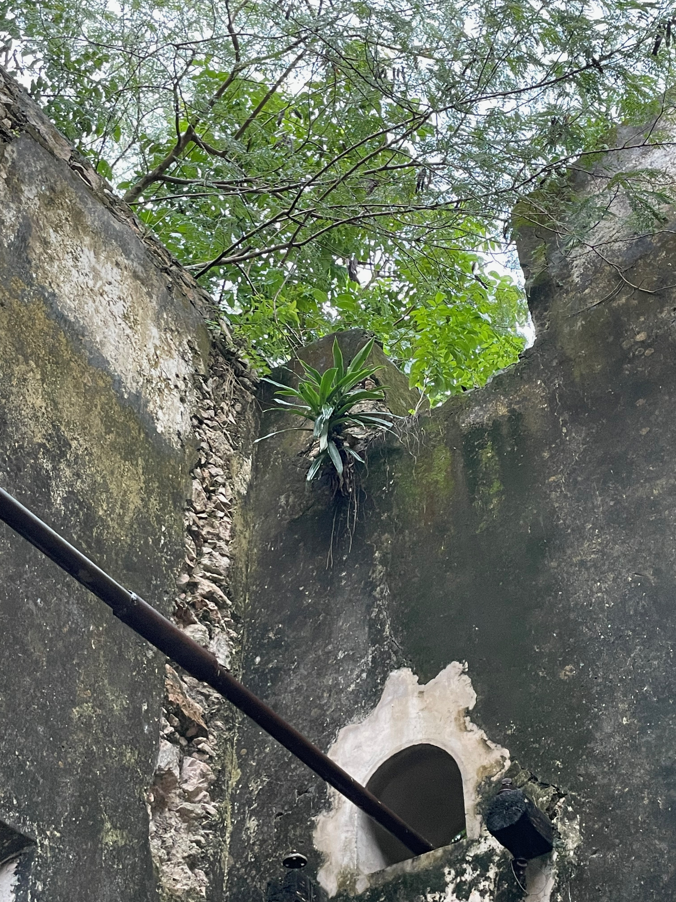

Week 2. Atlas of Weak Signals.
This second week we had the Atlas of Weak Signals course, which analyzes emerging issues that can be assessed and in which way they can be approached. This included a trip to Collserolla.
Read More
October 12, 2021
First I started with some research on what is tourism and what is regenerative. Regenerative refers to something growing or being grown again, to restore, renew and revitalize. It is an action that is beneficial to nature, species, humans and societies. This action has to have the capacity to develop and mantain resilient and flourishing ecosystems. This involves co-existance and co-evolution, design in context and place consideration.
Now tourism on the other hand is mainly about human recreation, it involves spending time away from home in pursuit of recreation, relaxation and pleasure. While doing this you make use of a lot of services around the logistics of your travel. Most of this services are damaging to nature. All the energy consumption, water use, use of resources and waste production.
A change of habits is absoloutely necessary for the conservation of nature and endangered species. A change in how people are used to doing things but also the knowledge on how to do it properly.
The main issues caused by tourism are: damaging biodiversity, destroying ecosystems for construction, sewage waste affecting marine life, noise, water and air pollution. This all summarizes in poor tourism practices. The lack of respect towards nature is one big issue that comes from our ego, our sense of feeling superior as a species and being able to handle the rest however way we wanto to. There is also lack of consciousness, mainly towards the results of our actions. We don't stop to think about where our waste is going to end up, who we are affecting and what we are changing in the habitats we visit or inhabit.

At this point I was already bummed about how damaging a species we are. And all of the main issues in nature I stumbled upon were mainly man caused. So my conclussion at first was that nature is definitely better without us. Looking at the past two years with covid and how the pandemic actually helped the environment replenish in some ways just reafirmed my theory that what nature need to regenerate is to be as far away as possible from us.
But that couldn't just be the answer, we've already done so much ireparable damage that we need to at least try to help nature regenerate at a faster speed in order to save some species who have no time. So I researched some of the possible positive actions we can do. One thing we've gotten good at is at data recollection for research. Now with the new technologies we can use them for a positive action and help researchers by injecting information about what we see when we travel. There is a lot of data we can gather from nature in order to help it.
There is also ecotourism which is defined as "the responsible travel to natural areas that conserves the environment, sustains the well-being of the local people, and involves interpretation and education" (TIES, 2015).But regenerative tourism has to go beyond conservation and dive into regeneration actions. So not just staying with not affecting nature but aiding its restoration. One of the most important actions we can take is the conscious interaction with species. We've grown so distant from our natural habitats, gettinig used to concrete and buildings and traffic and just the buzz of the city that we've forgotten what it is to interact with other species that are not humans or pets.

There are some examples of projects that are taking action towards a more resilient practice. There is 'Sustainable Sravel International' which uses travel and tourism to create environmental and social impact in destinations around the world. 'Indagare Travel with Impact program ' works by organizing trips that have a positive impact on the places they visit. They support local communities and help preserve great cultural sites for future generations while also protecting endangered wildlife and ecosystems. 'Gold Standard' helps manage best practices for climate and sustainable development interventions to maximise impact in the world. 'Verra' catalyzes measurable climate action and sustainable development outcomes coming from large investments for projects that promote activities to reduce emissions, improve livelihoods and protect nature. 'Plan Vivo' provides support to communities on the forefront of the climate crisis, they help protect and restore the environment and tackle climate change. There are also other initiatives like 'Climate Action Reserve' that is a carbon offset registry for the North American carbon market encouraging to reduce greenhouse gas emissions.
In conclussion, there are a lot of initiatives that are already on going which are trying to change the way we do things, because being realistic tourism is not dying anytime soon. Humans are now nomads and are in constant need of moving around the world since the beginning of globalization and now with all the means of transportation we have it's become really accessible. Also, we don't want to miss on visiting this amazing landscapes and natural habitats all arounud the world, so let's just find a way to do it in a resilient and respectful way.

15 january 2015 At 10:30 pm
Ne erat velit invidunt his. Eum in dicta veniam interesset, harum fuisset te nam ea cu lupta definitionem.
Reply
15 january 2015 At 10:30 pm
Ne erat velit invidunt his. Eum in dicta veniam interesset, harum fuisset te nam ea cu lupta definitionem.
Reply
15 january 2015 At 10:30 pm
Ne erat velit invidunt his. Eum in dicta veniam interesset, harum fuisset te nam ea cu lupta definitionem.
Reply
This second week we had the Atlas of Weak Signals course, which analyzes emerging issues that can be assessed and in which way they can be approached. This included a trip to Collserolla.
Read More
Week 3 was the introduction to biology. We learnt about microorganisms all around us and the composition behind them from cells to systems.
Read More
Agriculture Zero was a glimpse of what the agriculture world is. We went from the basics to the deeps like analyzing soil.
Read More